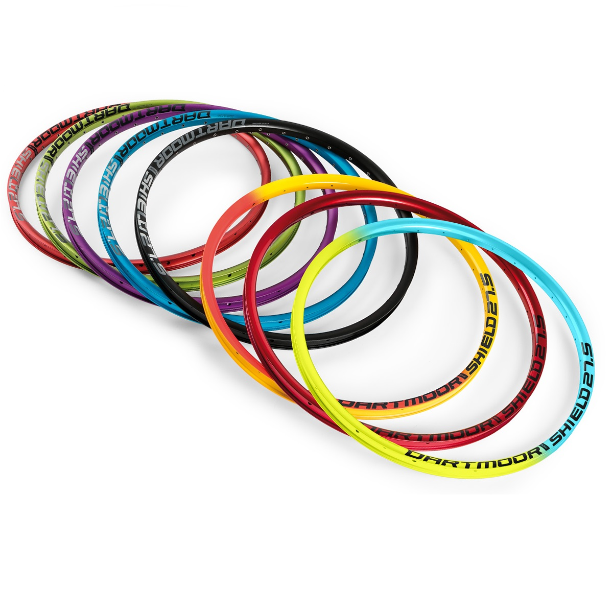
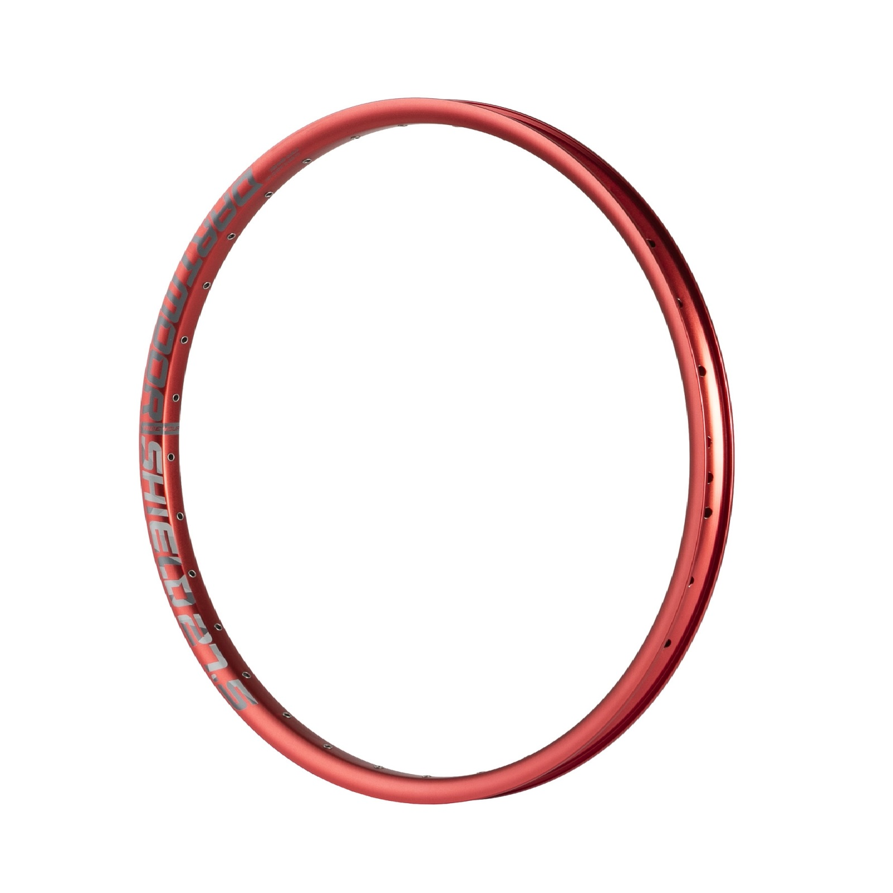

Міцна і легка конструкція обода досягнута завдяки використанню новітніх алюмінієвих сплавів серії 6061-Т6, гартуванню та безшовному з'єднанню на пінах обода Dartmoor Shield
| 1161грн. |
Характеристики й опис
| Виробник - DARTMOOR |
| Діаметр колеса - 24, 26, 27.5" |
| Призначення - Downhill-Freeride, Dirtt Jumping |
| Вага - 633g (27.5”); 602g (26”); 550g (24”) |
| Отвори - 32H |
| Зовнішня ширина - 33 мм; |
| Внутрішня ширина - 25.6 мм; |
| висота - 22 мм |
| ERD - 556mm (27.5”), 531mm (26”), 479mm (24”) |
| OSB - 0.5 мм |